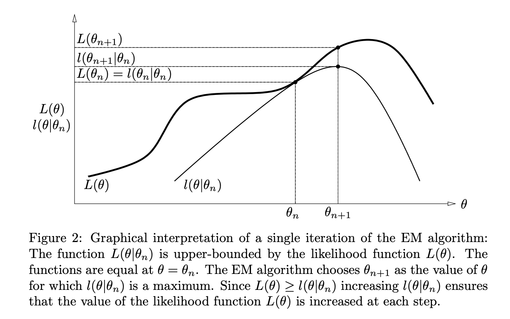
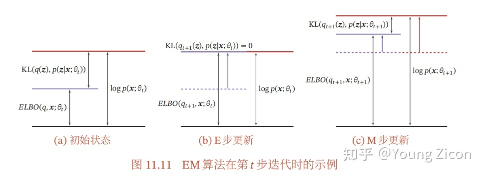
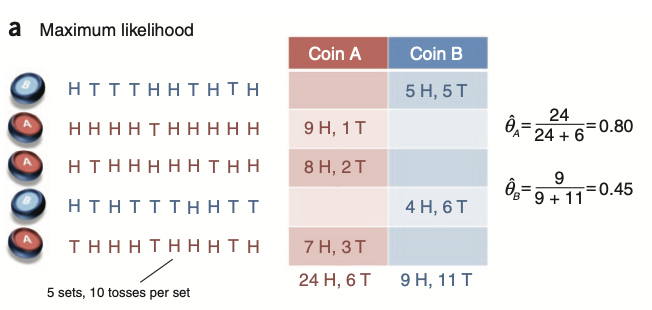
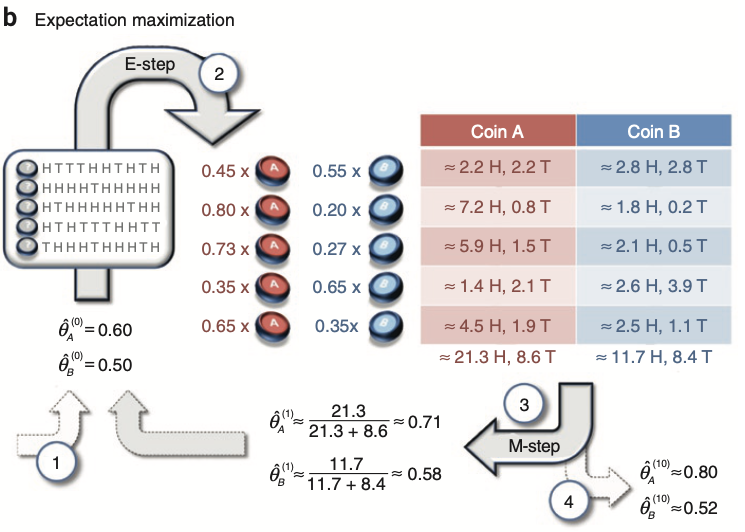

EM算法
EM 算法是极大似然法的推广，用于解决存在隐变量（hidden variables / latent factors）的参数估计问题。
1 EM 算法
1.1 理论推导
设观测样本是 \(x\)，隐变量为 \(z\)，模型参数为 \(\theta\)，那么对数似然为： \[ L(\theta)=\log P(x\vert \theta)=\log\left(\sum_{z} P(x,z\vert\theta)\right)\tag{1}\label{original} \] 由于隐变量的存在，我们无法直接写出 \(P(x\vert \theta)\) 而必须表示为 \(P(x,z\vert \theta)\) 求和（或积分）的形式，这导致 \(L(\theta)\) 的导数非常复杂，阻碍我们用极大似然法求解（可能无法写出封闭形式的解）。
EM 算法采用迭代的方式求解，即先初始化一个 \(\theta^{(0)}\)，然后不断迭代得到 \(\theta^{(1)},\theta^{(2)},\ldots\)。假设当前的参数估计值为 \(\theta^{(t)}\)，那么：
\[ \begin{align} L(\theta)-L(\theta^{(t)})&=\log\left(\sum_{z} P(x,z\vert\theta)\right)-\log P(x\vert \theta^{(t)})\\ &=\log\left(\sum_z P(x, z\vert\theta)\frac{P(z\vert x,\theta^{(t)})}{P(z\vert x,\theta^{(t)})}\right)-\log P(x\vert \theta^{(t)})\\ &\geq \sum_zP(z\vert x,\theta^{(t)})\log\frac{P(x, z\vert\theta)}{P(z\vert x,\theta^{(t)})}-\log P(x\vert \theta^{(t)})&&\text{Jensen's inequality}\\ &=\sum_z P(z\vert x,\theta^{(t)})\log\frac{P(x,z\vert\theta)}{P(z\vert x,\theta^{(t)})P(x\vert \theta^{(t)})}\\ &=\sum_z P(z\vert x,\theta^{(t)})\log\frac{P(x,z\vert\theta)}{P(x,z\vert\theta^{(t)})}\\ \end{align}\tag{2}\label{jensen} \] 为书写方便，记： \[ l(\theta\vert\theta^{(t)}) = L(\theta^{(t)})+\sum_z P(z\vert x,\theta^{(t)})\log \frac{P(x,z\vert\theta)}{P(x,z\vert\theta^{(t)})} \] 则： \[ L(\theta)\geq l(\theta\vert \theta^{(t)}) \] 即 \(l(\theta\vert\theta^{(t)})\) 是 \(L(\theta)\) 的下界。又由于 \[ l(\theta^{(t)}\vert\theta^{(t)})=L(\theta^{(t)})+\sum_z P(z\vert x,\theta^{(t)})\log 1=L(\theta^{(t)}) \] 所以只要我们优化下界 \(l(\theta\vert\theta^{(t)})\)，那么一定也优化了 \(L(\theta)\)： \[ L(\theta^{(t+1)})\geq l(\theta^{(t+1)}\vert \theta^{(t)})\geq l(\theta^{(t)}\vert\theta^{(t)})=L(\theta^{(t)})\tag{3}\label{mono} \] 
\(l(\theta\vert \theta^{(t)})\) 包含一些与 \(\theta\) 无关的常数项，丢掉它们即得到最终的优化目标： \[ Q(\theta,\theta^{(t)})=\sum_zP(z\vert x,\theta^{(t)})\log P(x,z\vert \theta) =\mathbb E_{z\vert x,\theta^{(t)}}\big[\log P(x,z\vert \theta)\big]\tag{4}\label{target} \] 总而言之，经过一通操作我们得出结论：迭代地优化 \(\eqref{target}\) 式可以达到优化 \(\eqref{original}\) 式的目的。而所谓 EM，E-step 就是求出优化目标 \(Q(\theta,\theta^{(t)})\)，M-step 就是优化它。
1.2 算法步骤
综上所述，EM 算法的过程如下：
随机初始化 \(\theta^{(0)}\)；
E-step：给定 \(\theta^{(t)}\)，求隐变量的概率分布： \[ P(z\vert x,\theta^{(t)}) \] 然后计算优化目标： \[ Q(\theta,\theta^{(t)})=\sum_zP(z\vert x,\theta^{(t)})\log P(x,z\vert \theta) \]
M-step：优化上式： \[ \theta^{(t+1)}=\arg\max_\theta Q(\theta,\theta^{(t)}) \]
迭代执行 2、3 步直至收敛。
1.3 收敛性
EM 算法一定收敛吗？这里的收敛其实包含两层意思：\(L(\theta)\) 收敛和 \(\theta\) 收敛，前者并不能蕴含后者。
- \(L(\theta)\) 收敛：上文中 \(\eqref{mono}\) 式已经说明了 \(L(\theta)\) 在优化过程中单调不减，又它显然有上界 \(0\)，根据单调有界定理，\(L(\theta)\) 必然收敛。
- \(\theta\) 收敛：参考文献[6]。
注意，虽然 EM 算法一定收敛，但是可能收敛到局部最优解。实践中往往选取不同的初值多跑几次，选择最佳的结果。
1.4 关于独立重复试验的注解
在上面的推导中，我们把所有的观测结果直接记作 \(x\)，这使得结论具有普适性。但实践中我们往往做的是独立重复试验，有 \(n\) 个相互独立的样本：\(x=(x_1,\ldots,x_n)\)，各样本对应各自的隐变量 \(z=(z_1,\ldots,z_n)\).
基于独立性，有： \[ P(z\vert x,\theta)=\prod_{i=1}^nP(z_i\vert x_i,\theta)\quad\quad P(x,z\vert\theta)=\prod_{i=1}^nP(x_i,z_i\vert \theta) \] 如果直接把它们代入 \(\eqref{target}\) 式的优化目标之中，会得到非常丑陋的结果： \[ \begin{align} Q(\theta,\theta^{(t)})&=\sum_zP(z\vert x,\theta^{(t)})\log P(x,z\vert \theta)\\ &=\sum_{z_1,\ldots,z_n}\left[\left(\prod_{i=1}^nP(z_i\vert x_i,\theta)\right)\log\left(\prod_{j=1}^nP(x_j,z_j\vert \theta)\right)\right]\\ &=\sum_{z_1,\ldots,z_n}\left[\left(\prod_{i=1}^nP(z_i\vert x_i,\theta)\right)\sum_{j=1}^n\log\left(P(x_j,z_j\vert \theta)\right)\right]\\ \end{align} \] 这是因为我们代入得太晚——在 Jensen's inequality 把对数和求和的顺序交换后，再代入就很难化简式子了（当然如果你头够铁，也不是不能化简，见参考资料[8][9]）。如果我们在 \(\eqref{original}\) 式就代入独立性： \[ \begin{align} L(\theta)=\log P(x\vert\theta)&=\log\prod_{i=1}^nP(x_i\vert\theta)\\ &=\sum_{i=1}^n\log P(x_i\vert\theta)\\ &=\sum_{i=1}^n\log\left(\sum_{z_i}P(x_i,z_i\vert\theta)\right) \end{align}\tag{1'} \] 继续推导，会发现只需要在相应地方加上求和 \(\sum_{i=1}^n\)、给 \(x\) 和 \(z\) 加上下标 \(i\) 即可，整个推导过程没有什么大的变化。最终优化目标写作： \[ Q(\theta,\theta^{(t)})=\sum_{i=1}^n\sum_{z_i}P(z_i\vert x_i,\theta^{(t)})\log P(x_i,z_i\vert \theta)\tag{4'}\label{target2} \] \(\eqref{target2}\) 式应该是实践中最常用的优化目标形式。
1.5 其他推导路线 1
参考资料[3][4][5]做了看起来和第一小节不太一样，但本质上差不多的推导，且个人认为这个推导思路更具有启发意义。对隐变量 \(z\)，引入其概率分布 \(q(z)\)，则： \[ \begin{align} L(\theta)=\log P(x\vert \theta)&=\log\left(\sum_{z} P(x,z\vert\theta)\right)\\ &=\log\left(\sum_z q(z)\frac{P(x,z\vert \theta)}{q(z)}\right)\\ &\geq\sum_zq(z)\log\frac{P(x,z\vert \theta)}{q(z)}&&\text{Jensen's inequality}\\ &=J(\theta,q) \end{align} \] 这说明我们找到了“一族” \(L(\theta)\) 的下界 \(J(\theta,q)\)，称为证据下界 ELBO (Evidence Lower BOund)。“一族”的意思是通过改变 \(q\)，我们能够得到不同的下界函数。根据 Jensen's inequality 的取等条件，容易推出当 \(q(z)=P(z\vert x,\theta)\) 时等号成立。事实上，如果把 \(q^\ast(z)=P(z\vert x,\theta)\) 代入上式，我们确实得到了一个等式： \[ J(\theta,q^\ast)=\sum_z P(z\vert x,\theta)\log \frac{P(x,z\vert \theta)}{P(z\vert x,\theta)}=\sum_zP(z\vert x,\theta)\log P(x\vert \theta)=\log P(x\vert \theta)=L(\theta) \] 现在我们把迭代过程加进来。假设当前模型参数为 \(\theta^{(t)}\)，那么我们可以取 \(q^\ast(z)=P(z\vert x,\theta^{(t)})\)，使得 \(J(\theta^{(t)},q^\ast)=L(\theta^{(t)})\)，即取一个特定的下界函数让它在 \(\theta^{(t)}\) 处与 \(L(\theta^{(t)})\) 相等，这其实就是 E-step；然后我们固定 \(q=q^\ast\) 不变，优化 \(J(\theta,q^\ast)\)，将模型参数更新为 \(\theta^{(t+1)}\)，那么 \[ L(\theta^{(t+1)})\geq J(\theta^{(t+1)},q^\ast)\geq J(\theta^{(t)},q^\ast)=L(\theta^{(t)}) \] 即 \(L(\theta)\) 也必然得到优化，这就是 M-step. 简而言之，EM 算法通过先优化 \(q\)，再优化 \(\theta\) 的迭代过程优化对数似然 \(L(\theta)\).

1.6 其他推导路线 2
在 1.5 节中，我们知道 \(L(\theta)\geq J(\theta,q)\)，那他俩之间究竟差了个什么呢？ \[ \begin{align} L(\theta)-J(\theta,q)&=\log P(x\vert \theta)-\sum_zq(z)\log\frac{P(x,z\vert\theta)}{q(z)}\\ &=\sum_zq(z)\left[\log P(x\vert \theta)-\log\frac{P(x,z\vert \theta)}{q(z)}\right]\\ &=\sum_z q(z)\log \frac{q(z)}{P(z\vert x,\theta)}\\ &=\mathrm{KL}(q(z)\|P(z\vert x,\theta)) \end{align} \] 啊！原来是引入的分布 \(q(z)\) 与 \(P(z\vert x,\theta)\) 之间的 KL 散度。之前推导过程中的 Jensen's inequality，其实对应着这里的 KL 散度非负。
事实上，存在其他的推导路线能直接写出 \(L(\theta)=J(\theta,q)+\mathrm{KL}(q(z)\|P(z\vert x,\theta))\) 这个等式而避开 Jensen's inequality 的，如下所示： \[ \begin{align} L(\theta)&=\log P(x\vert \theta)\\ &=\sum_z q(z)\log P(x\vert \theta)\\ &=\sum_z q(z)\log\left(\frac{P(x,z\vert \theta)}{P(z\vert x,\theta)}\cdot\frac{q(z)}{q(z)} \right)\\ &=\sum_z q(z)\left[\log\frac{P(x,z\vert \theta)}{q(z)}+\log\frac{q(z)}{P(z\vert x,\theta)} \right]\\ &=J(\theta,q)+\mathrm{KL}(q(z)\|P(z\vert x,\theta)) \end{align} \] 从等式的角度看，\(L(\theta)\) 被划分成了两部分——ELBO 和 KL 散度. 在 E-step 中，我们让 \(\mathrm{KL}=0\)，也就是让 \(L(\theta)=J(\theta,q)\)；在 M-step 中，固定 \(q\) 优化 \(J(\theta,q)\)，进而优化了 \(L(\theta)\)；这时由于 \(\theta\) 变了，KL 散度不再是零，我们便继续下一轮迭代。

2 例子：双硬币问题
假设我们有两枚硬币 A,B，它们正面朝上的概率分别是 \(\theta_A,\theta_B\). 我们希望估计参数 \(\theta=(\theta_A,\theta_B)\)，并做了 5 次如下试验：首先等概率地随机选取一枚硬币，然后掷选出的硬币 10 次。因此我们一共获得了 50 个结果。
如果第 \(i\) 次试验中我们记录了以下变量：
- \(z_i\in\{A,B\}\)，表示选择的硬币；
- \(x_i\in\{0,1,\ldots,10\}\)，表示正面朝上的次数
那么估计 \(\theta_A,\theta_B\) 将非常简单： \[ \begin{align} &\theta_A=\frac{\text{\# of heads using coin A}}{\text{total \# of flips using coin A}}\\ &\theta_B=\frac{\text{\# of heads using coin B}}{\text{total \# of flips using coin B}} \end{align} \] 注意，虽然这个结果在直观上小学生都能理解，但本质上它是极大似然估计。

现在，考虑一个更有挑战性的问题——我们并不知道每一次试验选的是哪枚硬币，只知道投掷结果，即 \(z_i\in\{A,B\}\) 变成了隐变量。应用 EM 算法：
随机初始化 \(\theta^{(0)}=(\theta_A^{(0)},\theta_B^{(0)})=(0.60,0.50)\)；
【E-step】求隐变量的概率分布 \(P(z_i\vert x_i,\theta^{(0)})\)，以第一次试验为例： \[ \begin{align} &P(z_1=A\vert x_1,\theta^{(0)})=\frac{P(z_1=A,x_1\vert\theta^{(0)})}{P(x_1\vert \theta^{(0)})}=\frac{(0.6)^5\times (0.4)^5}{(0.6)^5\times (0.4)^5+(0.5)^{10}}=0.45\\ &P(z_1=B\vert x_1,\theta^{(0)})=1-P(z_1=A\vert x_1,\theta^{(0)})=0.55 \end{align} \] > 为了书写方便，以下将 \(P(z_i=A\vert x_i,\theta^{(0)})\) 和 \(P(z_i=B\vert x_i,\theta^{(0)})\) 分别简记为 \(p_i\) 和 \((1-p_i)\).
计算优化目标 \(\eqref{target2}\)： \[ \begin{align} Q(\theta,\theta^{(0)})&=\sum_{i=1}^5\sum_{z_i\in\{A,B\}}P(z_i\vert x_i,\theta^{(0)})\log P(x_i,z_i\vert \theta)\\ &=\sum_{i=1}^5P(z_i=A\vert x_i,\theta^{(0)})\log P(x_i,z_i=A\vert \theta)+P(z_i=B\vert x_i,\theta^{(0)})\log P(x_i,z_i=B\vert \theta)\\ &=\sum_{i=1}^5 p_{i}\log\left[\theta_A^{x_i}(1-\theta_A)^{10-x_i}\right]+(1-p_i)\log\left[\theta_B^{x_i}(1-\theta_B)^{10-x_i}\right] \end{align} \]
【M-step】优化上述目标，求偏导并令为零： \[ \frac{\partial Q}{\partial \theta_A}=\sum_{i=1}^5 p_i\left(\frac{x_i}{\theta_A}-\frac{10-x_i}{1-\theta_A}\right)=\sum_{i=1}^5 p_i\frac{x_i-10\theta_A}{\theta_A(1-\theta_A)}=0 \] 解得： \[ \theta_A=\frac{\sum_{i=1}^5 p_ix_i}{10\sum_{i=1}^5 p_i}=\frac{2.25+7.2+5.84+1.4+4.55}{10\times(0.45+0.80+0.73+0.35+0.65)}\approx0.71 \] \(\theta_B\) 同理求解。
这是标准的解法，对于这个问题有更为简单的解法，见下图。
迭代执行 2、3 步直至收敛。

3 应用：高斯混合模型（GMM）
本节参考资料：[8]。
设有 \(K\) 个 \(d\) 维高斯分布： \[ \phi(x\vert \mu_k,\Sigma_k)=\frac{1}{ {(\sqrt{2\pi})}^d|\Sigma_k|^{1/2} }\exp\left(-\frac{(x-\mu_k)^T\Sigma_k^{-1}(x-\mu_k)}{2}\right),\quad k=1,\ldots,K \] 样本 \(\{x_1,\ldots,x_n:x_i\in\mathbb R^d\}\) 是由如下过程产生的：首先随机选取一个高斯分布（第 \(k\) 个高斯分布被选中的概率是 \(\alpha_k\)，其中 \(\sum_{k=1}^K\alpha_k=1\)），再从被选中的高斯分布中采样。试估计这 \(K\) 个高斯分布的参数 \(\theta=\{(\alpha_k,\mu_k,\Sigma_k)\vert k=1,\ldots,K\}\).
和双硬币问题非常相似，这个问题中我们不知道每次抽样究竟选取的是哪个高斯分布，所以可以定义隐变量 \(z_i\in\{1,\ldots,K\}\) 表示第 \(i\) 个样本来自哪个高斯分布。使用 EM 算法求解：
【E-step】隐变量的概率分布为： \[ P(z_i=k\vert x_i,\theta^{(t)})=\frac{P(x_i,z_i=k\vert \theta^{(t)})}{P(x_i\vert\theta^{(t)})}=\frac{\alpha_k^{(t)}\phi(x_i\vert \mu_k^{(t)},\Sigma_k^{(t)})}{\sum_{j=1}^K\alpha_j^{(t)}\phi(x_i\vert \mu_j^{(t)},\Sigma_j^{(t)})} \]
为书写方便，以下将其简记为 \(p_{ik}\)，注意这是一个常数。计算优化目标 \(\eqref{target2}\)： \[ \begin{align} Q(\theta,\theta^{(t)})&=\sum_{i=1}^n\sum_{k=1}^KP(z_i=k\vert x_i,\theta^{(t)})\log P(x_i,z_i=k\vert \theta)\\ &=\sum_{i=1}^n\sum_{k=1}^Kp_{ik}\log\left(\alpha_k\phi(x_i\vert \mu_k,\Sigma_k)\right)\\ &=\sum_{i=1}^n\sum_{k=1}^Kp_{ik}\left[\log\alpha_k+\log\phi(x_i\vert \mu_k,\Sigma_k)\right] \end{align} \]
【M-step】（大计算量警告，不想看可略过）
首先解 \(\alpha\)：结合条件 \(\sum_{k=1}^K\alpha_k=1\)，去掉与 \(\alpha\) 无关的部分，优化问题为： \[ \begin{align} &\max_\theta \sum_{i=1}^n\sum_{k=1}^Kp_{ik}\log\alpha_k\\ &\text{ s.t. }\sum_{k=1}^K\alpha_k=1 \end{align} \] 引入 Lagrange 乘子： \[ L(\theta)=\sum_{i=1}^n\sum_{k=1}^Kp_{ik}\log\alpha_k+\lambda\left(\sum_{k=1}^K\alpha_k-1\right) \] 求偏导并令为零： \[ \begin{align} &\frac{\partial L}{\partial \alpha_k}=\sum_{i=1}^n\frac{p_{ik}}{\alpha_k}+\lambda=0&&k=1,\ldots,K\\ &\frac{\partial L}{\partial \lambda}=\sum_{k=1}^K\alpha_k-1=0 \end{align} \] 解得： \[ \alpha_k=\frac{\sum_{i=1}^np_{ik}}{\sum_{i=1}^n\sum_{k=1}^Kp_{ik}}=\frac{\sum_{i=1}^np_{ik}}{n}\quad\quad k=1,\ldots,K \]
然后解 \(\mu\)：去掉与 \(\mu\) 无关的部分，优化目标为： \[ \begin{align} Q(\theta,\theta^{(t)})&\to\sum_{i=1}^n\sum_{k=1}^Kp_{ik}\log\phi(x_i\vert\mu_i,\Sigma_i)\\ &=\sum_{i=1}^n\sum_{k=1}^K p_{ik}\left(\log\frac{1}{ {(\sqrt{2\pi})}^d|\Sigma_k|^{1/2} }-\frac{(x_i-\mu_k)^T\Sigma_k^{-1}(x_i-\mu_k)}{2}\right)\\ &\to\sum_{i=1}^n\sum_{k=1}^K p_{ik}\left(\frac{(x_i-\mu_k)^T\Sigma_k^{-1}(x_i-\mu_k)}{2}\right)=Q'(\theta,\theta^{(t)}) \end{align} \] 求导令为零： \[ \begin{align}\frac{\partial Q'}{\partial \mu_k}&=\sum_{i=1}^n\frac{1}{2}p_{ik}\frac{\partial (x_i-\mu_k)^T\Sigma_k^{-1}(x_i-\mu_k)}{\partial \mu_k}\\ &=\sum_{i=1}^np_{ik}\Sigma_k^{-1}(x_i-\mu_k)\\ &=\Sigma_k^{-1}\sum_{i=1}^np_{ik}(x_i-\mu_k)=\vec 0 \end{align} \]
注：第二个等号应用了矩阵求导结论 \(\mathrm d(x^TAx)/\mathrm dx=(A+A^T)x\) 和协方差矩阵对称的特性。
解得： \[ \mu_k=\frac{\sum_{i=1}^np_{ik}x_i}{\sum_{i=1}^n p_{ik}}\quad\quad k=1,\ldots,K \]
最后解 \(\Sigma\)：去掉与 \(\Sigma\) 无关的部分，优化目标为： \[ \begin{align} Q(\theta,\theta^{(t)})&\to\sum_{i=1}^n\sum_{k=1}^Kp_{ik}\log\phi(x_i\vert\mu_i,\Sigma_i)\\ &=\sum_{i=1}^n\sum_{k=1}^K p_{ik}\left(\log\frac{1}{ {(\sqrt{2\pi})}^d}-\frac{1}{2}\log|\Sigma_k|-\frac{(x_i-\mu_k)^T\Sigma_k^{-1}(x_i-\mu_k)}{2}\right)\\ &\to\sum_{i=1}^n\sum_{k=1}^K p_{ik}\left(\log|\Sigma_k|+(x_i-\mu_k)^T\Sigma_k^{-1}(x_i-\mu_k)\right)=Q''(\theta,\theta^{(t)}) \end{align} \] 求导令为零： \[ \begin{align}\frac{\partial Q''}{\partial \Sigma_k}&=\sum_{i=1}^np_{ik}\left(\Sigma_k^{-1}-(x_i-\mu_k)(x_i-\mu_k)^T\Sigma_{k}^{-2} \right)=\mathbf 0 \end{align} \] 解得： \[ \Sigma_k=\frac{\sum_{i=1}^np_{ik}(x_i-\mu_k)(x_i-\mu_k)^T}{\sum_{i=1}^np_{ik}}\quad\quad k=1,\ldots,K \]
总结一下，用 EM 算法解 GMM 模型的步骤如下：
随机初始化模型参数 \(\alpha_k,\mu_k,\Sigma_k,\,k=1,\ldots,K\)
E-step：计算隐变量的概率分布： \[ p_{ik}=\frac{\alpha_k^{(t)}\phi(x_i\vert \mu_k^{(t)},\Sigma_k^{(t)})}{\sum_{j=1}^K\alpha_j^{(t)}\phi(x_i\vert \mu_j^{(t)},\Sigma_j^{(t)})} \]
M-step：计算新参数： \[ \begin{align} &\alpha_k^{(t+1)}=\frac{\sum_{i=1}^np_{ik}}{n}&& k=1,\ldots,K\\ &\mu_k^{(t+1)}=\frac{\sum_{i=1}^np_{ik}x_i}{\sum_{i=1}^n p_{ik}}&& k=1,\ldots,K\\ &\Sigma_k^{(t+1)}=\frac{\sum_{i=1}^np_{ik}(x_i-\mu_k)(x_i-\mu_k)^T}{\sum_{i=1}^np_{ik}}&& k=1,\ldots,K \end{align} \]
迭代执行第 2、3 步
4 一点注记
EM 算法在 E-step 要求我们能表达出后验概率 \(P(z\vert x,\theta)\)，从上面两个例子（双硬币问题、GMM）可以看出，它往往是通过贝叶斯公式计算的： \[ P(z\vert x,\theta)=\frac{P(x,z\vert \theta)}{P(x\vert \theta)}=\frac{P(x,z\vert \theta)}{\sum_\hat z P(x,\hat z\vert \theta)} \] 所以说我们终究没有避开计算似然 \(P(x\vert \theta)\)，因此要明晰的一点是，阻碍我们用极大似然法优化 \(\eqref{original}\) 式的不是计算似然本身，而是解令对数似然偏导为零后得到的那个方程组。
这自然带来了一个问题，如果似然本身就是 intractable 的，那么我们也无法计算后验概率 \(P(z\vert x,\theta)\)，那么 EM 算法就做不下去了，典型的例子就是 VAE。至于 VAE 怎么解决这个问题的，留给后文吧。
参考资料
- Borman, Sean. The expectation maximization algorithm-a short tutorial. https://www.lri.fr/~sebag/COURS/EM_algorithm.pdf ↩︎
- 李航.统计学习方法 ↩︎
- 人人都懂EM算法 - August的文章 - 知乎 https://zhuanlan.zhihu.com/p/36331115 ↩︎
- 【机器学习】EM——期望最大（非常详细） - 阿泽的文章 - 知乎 https://zhuanlan.zhihu.com/p/78311644 ↩︎
- Tengyu Ma and Andrew Ng. CS229 Lecture notes: The EM algorithm. https://cs229.stanford.edu/notes2021fall/cs229-notes8.pdf ↩︎
- Wu, CF Jeff. On the convergence properties of the EM algorithm. The Annals of statistics (1983): 95-103. ↩︎
- Do, Chuong B., and Serafim Batzoglou. What is the expectation maximization algorithm?. Nature biotechnology 26, no. 8 (2008): 897-899. ↩︎
- 高斯混合模型（GMM）推导及实现 - 永远在你身后的文章 - 知乎 https://zhuanlan.zhihu.com/p/85338773 ↩︎
- 【机器学习-白板推导系列(十一)-高斯混合模型GMM（Gaussian Mixture Model）】 https://www.bilibili.com/video/BV13b411w7Xj?p=3&share_source=copy_web&vd_source=a43b4442e295a96065c7ae919b4866d3 ↩︎